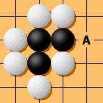
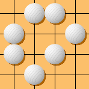
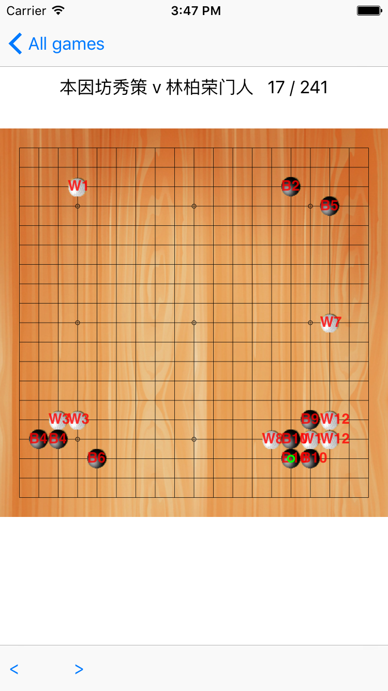

用Swift写围棋App－09分片算法
tags: Apps, 开发随笔
到前天为止，我们的应用已经可以基本解析棋谱，并将每一步棋绘制到棋盘上。
这很好。
不过，目前最大的一个问题在于，目前应用还太傻。它只知道一步步的摆放棋子，它不知道哪些棋子是死的。

比如，在上图中，如果白棋下在A处，则三颗黑棋气尽，应该被提掉，正确的结果应该如下图所示。然而我们的应用现在依然会绘制这三颗棋。

因此，我们需要一种算法，可以判断每一颗棋是不是死的。
要完成这个任务，我们可以需要2个子任务：
1.识别哪些棋是连成片的；
2.计算每一片棋的气（liberty），liberty == 0,则整片棋都死掉；
今天我们先解决分片的问题。
一颗一颗连在一起的棋，我们称之为一片。2颗同色的棋，只有紧紧的挨着，才能算连在一起。这里有2个条件:必须同色，必须挨着。我们还是来TDD。先写测试用例：
func testIsConnected(){
let m1 = Move(step:"B[aa]")
let m2 = Move(step:"B[ab]")
let m3 = Move(step:"W[ba]")
assert(m1.isConnectedTo(m2),"m1 is connected to m2")
assert(!m1.isConnectedTo(m3),"m1 is not connected to m3")
}
实现代码也很简单(在Move类中)：
func isConnectedTo(another:Move)->Bool{
if (self.type != another.type) {
return false
}
let deltaX = abs(Int(self.location.x) - Int(another.location.x))
let deltaY = abs(Int(self.location.y) - Int(another.location.y))
return deltaX + deltaY == 1
}
测试通过！然后开始分片。
还是先写测试用例：
func testAssignedGroups(){
let kifu = "(;;B[aa];W[ab];B[ca];W[bb];B[ba])"
let game = parser.parse(kifu)
game.currentMove = 4
let groups = game.assignGroups()
assert(groups.count == 2)
assert(game.allMoves[0].groupName == "B1")
assert(game.allMoves[2].groupName == "B1")
assert(game.allMoves[1].groupName == "W2")
}
分片实现代码如下(实现为MoveInfo类的一个方法)：
func assignGroups() ->[MoveGroup]{
let array = currentMoves().sort({ $0.location.distance() < $1.location.distance() })
let count = array.count
var groups = [MoveGroup]()
var groupIndex = 0
for move in array
{
move.groupName = ""
}
for var i = 0;i < count; i++
{
let move = array[i]
if move.groupName.characters.count > 0
{continue}
for previous in array[0..<i]
{
if previous.groupName.characters.count > 0
&& move.isConnectedTo(previous){
move.groupName = previous.groupName;
}
}
if move.groupName.characters.count > 0
{
continue
}
groupIndex += 1
let group = MoveGroup()
group.type = move.type
group.sequence = groupIndex
group.name = "\(group.type.rawValue)\(group.sequence)"
groups.append(group)
group.addMove(move)
}
return groups;
}
测试通过！说明算法基本有效。
让我们来看看分片的效果显示在棋盘上是什么效果。
我们只需要在绘制棋子的地方添加几行代码就可以将分片的组名显示在棋子上:
if move.groupName.characters.count > 0 {
//CGContextSetTextMatrix(ctx, CGAffineTransformMakeScale(1.0, -1.0))
CGContextSetRGBStrokeColor(ctx, 1, 0, 0, 1)
let p = CGPointMake((CGFloat(move.location.x)+0.5)*stoneSize,(CGFloat(move.location.y)+0.5)*stoneSize);
(move.groupName as NSString).drawAtPoint(p, withAttributes:textFontAttributes)
}
}

这个效果就是我想要的。
太好不过。
现在push最新的代码到github:https://github.com/marknote/GoTao
然后就可以收工了。
下一步就可以写计算liberty的处理了。